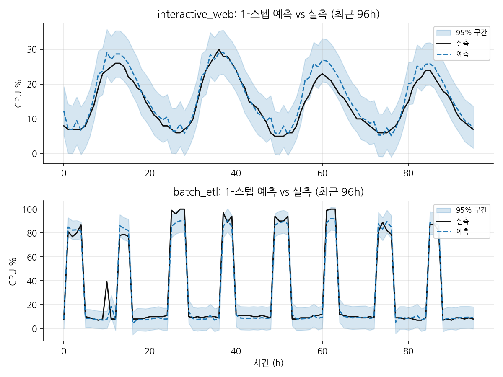
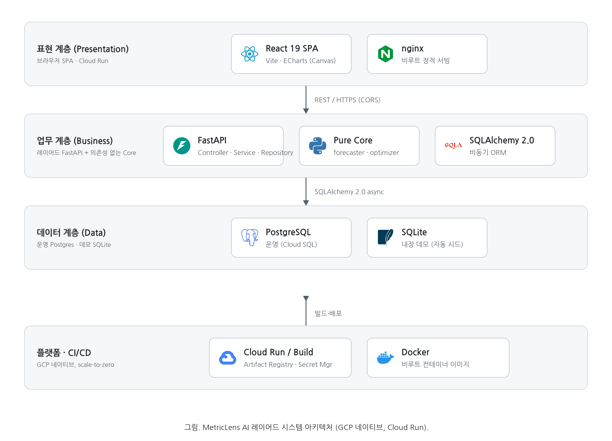
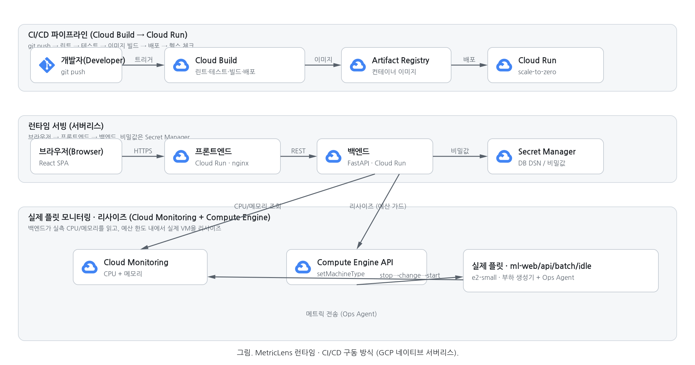
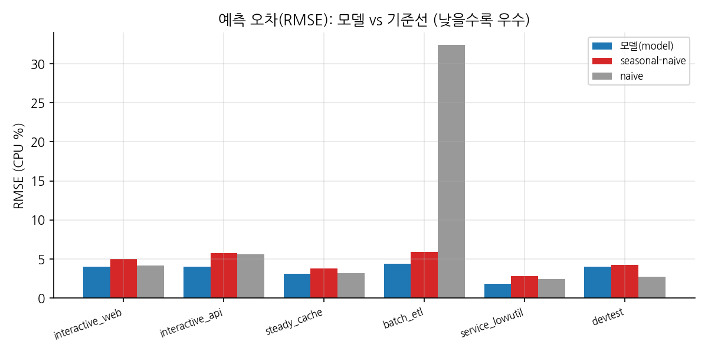

Team 구글링 · googai_congress
MetricLens AI
경량 시계열 예측 기반
서버 리소스 부하 예측 · SLO 제약 리사이징 최적화
GPU 없이 CPU만으로 부하를 예측하고, 정수계획법으로 SLO를 보장하는 최소 자원을 산출한다.
실제 GCP 인스턴스를 모니터링하고 리사이즈까지 수행한다.
팀장 이용원 · 서한녕 · 송심우 | → / Space 로 이동 · 약 10분
문제 정의
온프레미스는 만성적으로 자원을 과다 할당한다
- Microsoft Azure 운영 트레이스(SOSP'17): VM의 약 60%가 평균 CPU 20% 미만.
할당한 자원의 대부분이 유휴 상태로 비용·전력을 소모한다.
- 퍼블릭 클라우드의 자동 최적화 도구(CAST AI, AWS Compute Optimizer 등)는
망분리·규제 온프레미스 환경에서 사용할 수 없다
(텔레메트리를 외부로 전송해야 하므로).
- 온프레 모니터링 도구는 임계치 기반 사후 리포팅에 그친다.
"얼마나 줄여도 되는가"를 제약 최적화로 풀지 못한다.
핵심 공백
외부 의존성 없이, GPU 없이, 데이터에 근거해
"SLO를 깨지 않는 최소 자원"을 정량 산출하는 도구가 없다.
MetricLens는 정확히 이 지점을 채운다.
출처: Cortez et al., "Resource Central", SOSP 2017 · Barroso & Hölzle, "The Datacenter as a Computer".
한눈에 보기
예측 → 강건 피크 → SLO 제약 정수계획 → 리사이즈
① 예측계절-추세 분해 + AR(1)로 미래 부하와 95% 구간 추정
→
② 강건 피크예측의 p95로 안정적 피크 산정 (단발 스파이크 배제)
→
③ 정수계획헤드룸 제약 하 최소 정수 할당을 전수 열거로 산출
→
④ 리사이즈GCP 머신타입에 매핑 + 실제 적용·감사 기록
핵심 질문은 하나다 — "SLO를 깨지 않으면서 자원을 얼마나 줄일 수 있는가?"
이후 슬라이드에서 각 단계의 개념을 차례로 설명한다.
개념 ① · 무엇을, 왜 예측하나
시계열 예측: 과거 관측으로 미래 값을 추정
- 입력: 호스트별 CPU·메모리·네트워크의 시간단위 시계열
(시각 순서로 정렬된 수열 y₁, y₂, …, yₙ).
- 출력: h 시점 뒤의 값 ŷ(n+h)와
그 불확실성(예측구간).
- 서버 부하 시계열은 세 가지 특성을 동시에 가진다:
추세(서서히 증가/감소), 주기성(하루 24h 일주기),
자기상관(직전 상태가 다음 상태에 영향).
→ 이 세 특성을 각각 분리해 모델링하는 것이 정확도의 핵심이다.
설계 제약
- 표준 라이브러리만 사용 — 네이티브 의존성·GPU 불필요
- 화이트박스 — 모든 계산 단계가 검증·설명 가능
- 경량 — 컨테이너 풋프린트와 추론 비용 최소화
개념 ② · 계절-추세 분해
신호를 추세 + 계절 + 잔차로 분리한다
y[t] = trend[t] + seasonal[t mod p] + residual[t]
- 추세: 표본 인덱스에 대한 최소제곱(OLS) 직선. 한 주기 단위로 평균 내 계절 성분이 기울기에 새지 않게 한다.
- 계절: 추세 제거 후 위상(t mod p)별 평균. 합이 0이 되도록 재중심화해 추세를 편향시키지 않는다.
- 잔차: 추세·계절로 설명되지 않는 나머지. 이 분산이 예측구간의 폭을 결정한다.
개념 ③ · AR(1) 잔차 보정
최근 상태를 예측에 반영해 정확도를 높인다
실측 CPU 신호의 잔차는 무작위가 아니라 자기상관을 가진다.
직전 잔차가 크면 다음 잔차도 클 가능성이 높다.
- 잔차의 시차-1 자기상관 ρ를 추정한다 (0~0.95로 제한).
- 분해 예측값에 직전 잔차의 ρh배를 더한다 —
먼 미래일수록(h↑) 영향이 지수적으로 감쇠한다.
- 실측 CPU 트레이스에서 ρ는 흔히 0.5~0.9로, 이 항이 큰 이득을 준다.
ŷ = trend + seasonal + ρh · residual[최근]
이 항 덕분에 직전값·계절-나이브 기준선을 모두 능가한다.
개념 ④ · 불확실성(예측구간)
점예측만으로는 부족하다 — 구간으로 불확실성을 정량화
- 리사이징은 위험한 결정이다. 점예측 ŷ 하나만으로 줄이면
예측이 빗나갈 때 SLO를 위반한다.
- 그래서 95% 예측구간을 함께 산출한다:
[lower, upper] = ŷ ± 1.96 · RMSE
- RMSE는 표본 외(out-of-sample) 백테스트 오차에서 구한다 —
확장 윈도우 1-스텝 예측을 실제값과 비교. 진짜 예측 불확실성을 반영한다.
- 이력이 부족하면 분해 잔차의 표준편차로 대체(폴백)한다.
구간이 잘 맞는가? — PICP
PICP(예측구간 커버리지 확률) = 실제값이 구간 안에 들어온 비율.
공칭 0.95에 가까워야 보정이 잘 된 것이다.
0.93–0.98실측 PICP (공칭 0.95)
→ 불확실성 추정이 과대·과소하지 않고 잘 보정됨.
예측 결과
1-스텝 예측 vs 실측 + 95% 구간

실선=실측, 점선=예측, 음영=95% 예측구간. 대화형·배치 워크로드 모두에서 구간이 실측을 안정적으로 포함한다.
개념 ⑤ · 강건 피크 (p95)
최댓값이 아니라 p95로 피크를 잡는다
리사이징의 기준은 "피크 부하"다. 그러나 단 한 번의 스파이크를
기준으로 삼으면 그 1회 때문에 영구적으로 과다 할당하게 된다.
- 그래서 최댓값(max) 대신 95 백분위수(p95)를 피크로 사용한다
(nearest-rank 방식).
- 거의 모든 시간의 부하는 견디면서, 드문 단발 급등에는 과민 반응하지 않는다.
- 이는 용량 산정의 표준적인 강건 통계량이다.
오른쪽: 한 번의 급등(max=98)은 무시하고 p95=64를 피크로 채택.
개념 ⑥ · SLO 제약 정수계획
"SLO를 깨지 않는 최소 정수 할당"을 정확히 푼다
SLO(Service-Level Objective): 서비스가 지켜야 할 목표(예: 가용성 99.9%).
여기서는 "피크에도 이용률이 목표 이하로 유지"되어야 SLO가 지켜진다.
최적화 문제 — 비용(=할당량) 최소화, 단 헤드룸 제약 충족:
peakp95 · safety_margin ≤ target_util · allocation
- vCPU는 정수, 메모리는 256 MB 블록 단위 — 실제로 할당 가능한 단위가 정수이므로 정수계획 문제다.
- 탐색 공간이 작고 유계라 전수 열거(exact enumeration)로 전역 최적을 보장한다 — 외부 솔버 불필요.
왜 정수계획인가
- 연속 완화 해를 올림하면 SLO를 미세하게 위반할 수 있다.
- 제약을 만족하는 가장 작은 정수를 직접 찾으면 위반 없이 최소 비용을 보장한다.
- 제약을 만족할 수 없으면(이미 과소 할당) 현재 할당을 유지 — 안전한 폴백.
개념 ⑦ · 안전마진·타깃 이용률 (예시 계산)
파라미터의 의미와 실제 산출 과정
- target_util = 0.65: 정상 상태 이용률 상한. 35%를 버스트·오차 흡수용 헤드룸으로 남긴다.
- safety_margin = 1.2: 예측 오차를 흡수하는 곱셈 버퍼. 예측보다 20% 더 큰 부하를 가정한다.
- 두 값이 함께 SLO 신뢰도(예: 99.9%)를 지탱한다.
→ 보수적일수록(낮은 target, 높은 margin) 더 안전하지만 절감폭은 줄어든다. 운영 정책으로 조정 가능.
예시 — 4 vCPU 호스트
| 예측 피크 CPU | 35% |
| 부하(vCPU 환산) | 0.35 × 4 × 1.2 = 1.68 |
| 제약 | 1.68 ≤ 0.65 × n |
| 최소 정수 n | n ≥ 2.58 → 3 vCPU |
| 결과 | 4 → 3 vCPU (−25%) |
메모리는 동일 절차를 256 MB 블록 단위로 수행.
시스템 아키텍처
3계층 레이어드 · CI/CD 분리 · GCP 네이티브

표현·업무·데이터 3계층 + 횡단 배포 인프라(런타임 플랫폼 / CI/CD 분리). 의존성은 아래로만 흐르고, 순수 Core는 DB 없이 단위 테스트된다.
구동 방식
런타임 서빙 · CI/CD · 실측 제어 루프

git push → Cloud Build → Cloud Run(scale-to-zero) 배포. 백엔드가 Cloud Monitoring 실측을 읽고 Compute Engine으로 실제 VM을 리사이즈한다.
실제 GCP 연동
데모가 아니라 실제 인프라를 제어한다
- Cloud Monitoring으로 실제 인스턴스(ml-web/api/batch/idle)의 CPU·메모리를 적재.
- Compute Engine API로 실제 머신 타입을 변경(stop → setMachineType → start).
- 월 ₩300k 예산 가드 + 보호 인스턴스 denylist로 안전장치 적용.
4대실제 e2-small 인스턴스
≈₩84k/월 (예산 한도 내)
0유휴 시 Cloud Run 비용
52백엔드 자동 테스트
데이터의 통계적 대표성
균일하지 않은, 근거 있는 합성 데이터
- 공개 운영 트레이스에 정렬: Azure(SOSP'17) · Alibaba 2018 · Barroso & Hölzle.
- 생성기는 AR(1) 자기상관 · 날짜별 변동 · 추세 · 이분산 · 이상치를 결정론적으로 가산
(6종 워크로드 아키타입 × 14일 시간단위).
- 균일한 합성 데이터의 비현실성을 피하고, 평가의 통계적 당위성을 확보한다.
6종워크로드 아키타입
0.28–1.11변동계수 CV
0.5–0.9시차-1 자기상관
근거: docs/09_workload_modeling.md · 생성기 backend/app/core/workload.py.
모델 평가 (논문 수준)
기준선을 능가하고, 잘 보정됨
| 지표 | 결과 |
|---|
| seasonal-naive 능가 (RMSE) | 6 / 6 |
| MASE < 1 (스케일 불변 우수) | 5 / 6 |
| Diebold–Mariano 검정 p<0.05 | 4 / 6 |
| 예측구간 커버리지 PICP | 0.93–0.98 |
RMSE·MAE·MAPE·sMAPE·MASE·DM 검정·PICP/MPIW로
평가 — 단일 MAPE보다 엄밀하다. 확장 윈도우 1-스텝 백테스트.

출처: Hyndman & Koehler 2006 (MASE) · Diebold & Mariano 1995 (DM test).
차별점
경쟁이 들어오지 못하는 공백
🔒 에어갭/온프레 자립형
🪶 GPU-프리 경량
🎯 SLO 제약 처방적 정수계획
🔍 화이트박스 설명가능성
🧾 감사 추적
🧩 인프라 비종속 (VM/베어메탈)
SaaS 옵티마이저
텔레메트리 외부 전송 필요 → 망분리 불가.
CSP 추천기
단일 클라우드 종속 → 온프레·멀티 불가.
MetricLens는 이 셋의 사이, 규제·온프레 환경의 처방적 최적화 공백을 차지한다.
지금 체험
직접 눌러보세요
대시보드에서 예측 실행 · 리사이즈 · History 열람 · Test Scenarios
(실제 GCP 동기화/리사이즈/모델 평가)까지 모두 동작한다.
MetricLens AI · Team 구글링 — 감사합니다.